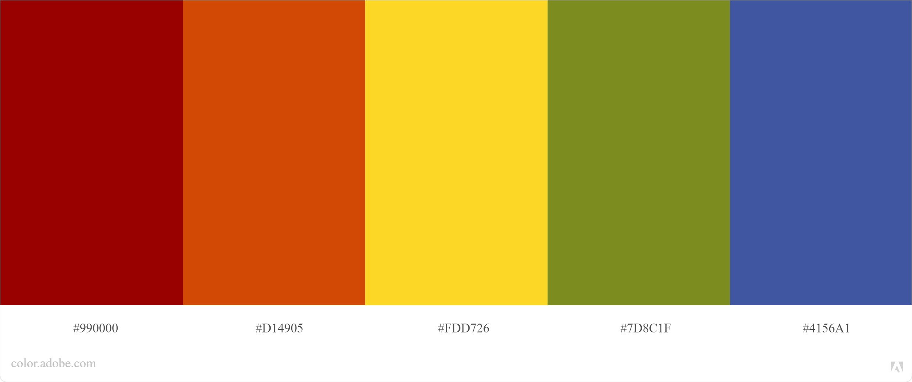
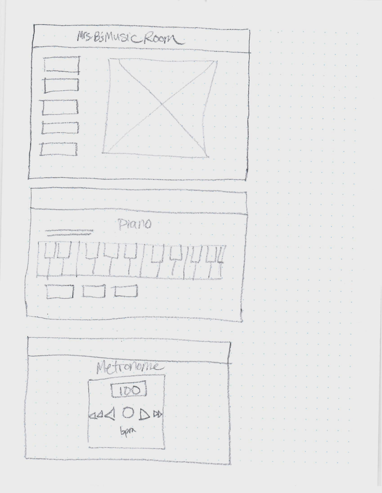
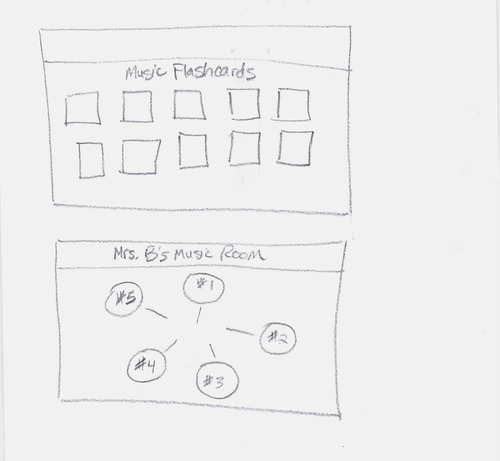

Purpose
This project is a culmination of what I've been learning for this semester, with more detailed work in HTML, CSS, and in depth JavaScript features. For this project, I wanted to bring as many of the new skills I've been working on as possible and to create a challenge for me to learn as I develop these ideas. As I brainstormed ideas, I came up with the idea of an application that I could use with my elementary school students in the music classroom where I work. After school going online last year, I was looking for fun ideas to help students learn and interact with music concepts I teach in the classroom over their computers. Even back in the classroom, every once in a while we have a computer day and play with music apps. I want to create an application that would have a few music activities I create, as well as link to some of our favorites and have a library all in one place.
This app I will create will have a few parts to it. First, I would use JavaScript to program a basic metronome. I'm hoping to be able to style it to look like a fun metronome that the user can select the different beats per minute and use for keeping a steady beat. We use this in the classroom frequently, and having one on my own app would be fun for students to get to set the beat themselves.
The second part of the app is an interactive piano keyboard for students to play on. I have seen many different tutorials for how to create a piano with JavaScript and I'm excited for the challenge. This will use event listeners and pull notes/sounds from a Web Audio API library.
A third section of the app will contain musical flashcards with information about musical instrument groups, composers, rhythm, and other facts taught in class. They would have a term on one side and flip over to have the definition, or more detail on the back. This will either use data pulled from an external API source, or pull from a JSON file of my own creating. I will use JavaScript to create the cards on the page, and then style them with CSS and transforms.
Last, I'd like to make use of the drum sounds we used for a team activity this semester and program a drum set for the app. I will style it to match the elementary classroom theme, fitting better with the feel of the page. Depending on the time each of these activities takes, I might work on adding in more musical instrument features to be used in the app as well.
Audience
The audience for this app is mainly my elementary music students, from Kindergarten to 6th graders, so age 5-12 years old.
Color Palette
The color palette for this web application is mostly fun rainbow inspired primary and secondary colors that can be found in an elementay school classroom. The colors are bright and vivid and engaging for the specific audience for this application. They will help add to the fun nature of the games and information presented, and be appropriate for the setting in which this app will be used.
Typography
To keep with the playful nature of an elementary school music room, I
wanted a fun header font that will be light and fun, but not the
ever-common font that is used on every worksheet that comes with my
kids from school (No Comic Sans! Courtesy of every design class I've
had in my college education... ha!)
I've chosen to use Bubblegum
Sans from Google Fonts for headers, and Lato, a sans-serif font for
body copy that is easy to read.
Bubblegum Sans for headers
Wireframes
 Initial Module List
I am still working through the organization of the modules in my mind for how to manage the different scripts necessary for these activities. I think I will have a separate JS file for each activity, one for the piano, one for the metronome, a JSON file for the flashcards, etc. I think I will probably work this list out more as I create each activity.
Schedule
I have a few weeks to work on this project and want to use my time as effectively as possible in order to create a complete and well-designed web application. Here is a basic structure/schedule that is my initial plan to follow in order to accomplish all of these tasks. Hopefully this is a good break down, but subject to revision as needed depending on how much time it takes to work out the kinks.
- Week 10: Revise plans, finalize plans and research APIs for the piano keyboard and music facts. Begin building home view.
- Week 11: Build Metronome and Piano Keyboard functionality, begin to style them
- Week 12: Build Flashcards section and Drums page (or other instruments page). Finish styling pages.
- Week 13: Finalize styling to make everything polished and looking beautiful. Test and troubleshoot everything, tie up loose ends and add transforms/transitions for increased user fun.